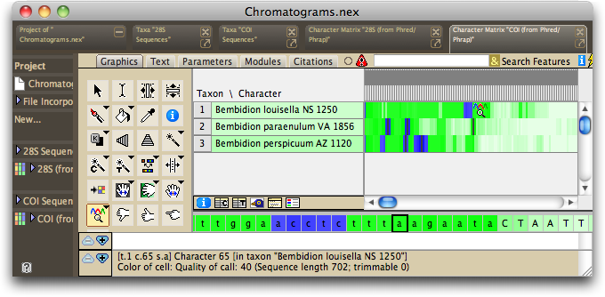
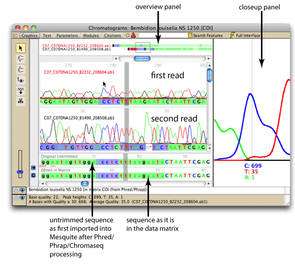
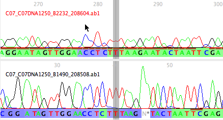
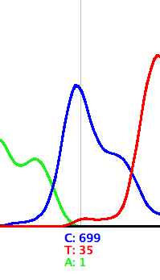

Chromaseq has a basic chromatogram viewer built in. To see the chromatgrams for a particular sequence, touch the View Chromatograms tool ( ) on a sequence. For example, if you touched on the top sequence in the Chromatograms example from the tutorial:
) on a sequence. For example, if you touched on the top sequence in the Chromatograms example from the tutorial:

The chromatogram viewer should appear, centered approximately on the base you touched:

The default components of the chromatogram viewer are shown below:

There are many options for the elements that are displayed, and how they are displayed. For example, you can choose to hide the overview panel, or the closeup panel, or show other panels not illustrated above. Some pre-built styles exist that set a number of options all at once; these are available in the Styles submenu of the Chromatograms menu.
There are various options changing the display of the chromatograms. Once you have set up the display to meet your needs, you may wish to choose "Save Current Settings as Defaults" from the Chromatograms menu, which will establish your display settings as those to be used for future chromatograms you will view. To have these settings override even those stored in a file, choose "Ignore File Settings; Use Defaults" first, and then choose "Save Current Settings as Defaults".
There are various tools for navigating quickly through the chromatograms. You can also change the base calls from within the chromatogram viewer.
Chromatogram Panel


Closeup Panel

Overview Panel